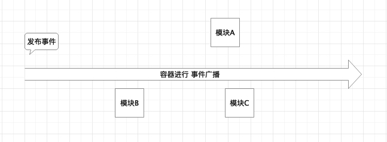

Spring事件发布
目录：
1.简介
Spring中的事件通知机制是观察者模式的一种实现。观察者是ApplicaitonListener，观察者感兴趣的是某种状态的变化，这种变化使用ApplicaitonEvent来传达，也就是事件对象。Spring中的事件包括 : ContextStartedEvent(容器启动事件)，ContextStopEvent（容器停止事件），ContextRefreshEvent(容器重启事件)，ContextClosedEvent（容器关闭事件)。

如图所示，是事件发布的一个大体流程。首先容器（Spring容器，Servlet容器/即tomcat服务器）注册监听器用来监听特定的事件；然后容器发布特定类型的事件，然后进行事件通知/事件广播通知已经注册的监听器用来处理
sequenceDiagram
客户端->>Spring容器/Servlet容器:1.注册监听特定事件的监听器
Spring容器/Servlet容器->>Spring容器/Servlet容器:2.发布特定类型的事件
Spring容器/Servlet容器->>容器中其他模块:3.广播事件
容器中其他模块->>容器中其他模块:4.对特定的广播事件进行相应
2.源码分析
sequenceDiagram
AbstractApplicationContext->>AbstractApplicationContext:publishEvent(Object event) 发布事件
AbstractApplicationContext->>ApplicationEventMulticaster:multicastEvent(ApplicationEvent) 广播事件
ApplicationEventMulticaster->>ApplicationEventMulticaster:getApplicationListeners(ApplicationEvent,ResolvableType) 获取相应事件的监听器
ApplicationEventMulticaster->>ApplicationEventMulticaster:invokeListener(ApplicationListener listener , ApplicationEvent event) 触发事件
3.总结
事件发布适用于某些容器/系统中 产生各种事件的情况。要考虑到事件所在的上下文（容器/系统）